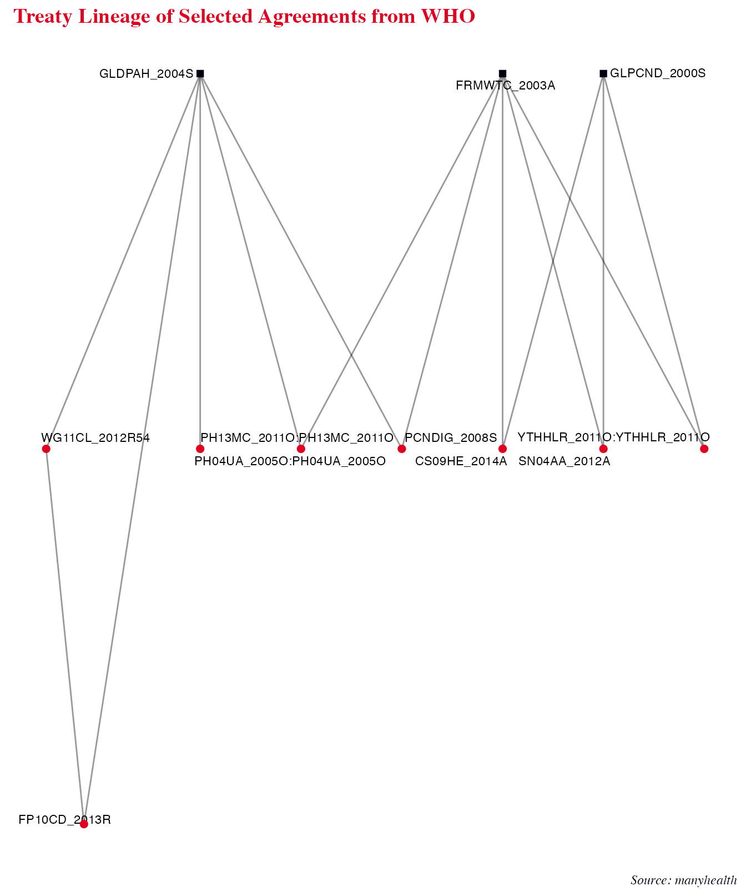

What Does Global Health Governance Look Like?
Jael Tan, Henrique Sposito, and Esther Peev
2024-06-13
Source:vignettes/healthdata.Rmd
healthdata.Rmdmanyhealth Data
manyhealth package contains four datacubes, including data on health agreements, state memberships to these agreements, the lineage of these agreements, and organizations involved in global health governance. This vignette briefly introduces each of these datacubes.
The agreements datacube contains 3 datasets (WHO, GHHR,
and HUGGO) with a total of 509 observations. The WHO dataset contains
agreements from the World Health Organization. The GHHR dataset contains
data from the Global Health and Human Rights database. The HUGGO dataset
contains a handcoded data of the health agreements identified in the WHO
and GHHR datasets, improving on the precision of dates, resolving any
conflicts between these datasets, correcting incorrect information, and
filling in any missing information that could be found.
manydata::compare_dimensions(manyhealth::agreements) %>%
kable("html")| Dataset | Observations | Variables | Earliest_Date | Latest_Date |
|---|---|---|---|---|
| WHO | 108 | manyID, treatyID, Title, Begin, Organisation, Topic, Lineage, whoID | 1948-01-01 | 4313-12-31 |
| GHHR | 149 | manyID, treatyID, Title, Begin, Region, LegalStatus, Lineage, ghhrID | 1930-01-01 | 2011-12-31 |
| HUGGO | 252 | manyID, treatyID, Title, Begin, Signature, Force, End, Formal, TreatyText, url, Source, Comments, Topic | 1930-06-28 | 9999-12-31 |
For instance, the WHO dataset, which contains data that was scraped automatically from the WHO MiNDBANK database online, has the latest date as 4313-12-31. For this observation with the year ‘4313’ in the WHO dataset, “Human Rights Council Resolution A/HRC/RES/43/13 Mental Health and Human Rights”, the precise and accurate adoption date has been manually verified and included in the HUGGO dataset as 2020-06-19. With manual coding, the HUGGO dataset provides more precise and accurate data than what was obtained from webpage scraping.
Extending from data in the agreements datacube, the
memberships datacube contains 1 dataset (HUGGO_MEM) with
hand-coded data of 39,000 observations on state memberships to
international health instruments. This is, to our knowledge, the first
such dataset available.
The references datacube contains 2 datasets (WHO_REF and
GHHR_REF) with 289 observations on the lineages between international
health instruments.
The organizations datacube contains 3 datasets (CHATHAM,
IHEID, GHS) with a total of 530 observations. The datacube contains data
on organizations involved in international health governance.
manydata::compare_dimensions(manyhealth::organizations) %>%
kable("html")| Dataset | Observations | Variables | Earliest_Date | Latest_Date |
|---|---|---|---|---|
| CHATHAM | 203 | organizationID, Organization, Begin, City, State, Type, Health_as_primary_intent | 1975-02-08 | 1975-07-05 |
| IHEID | 124 | organizationID, Organization, Begin, Areas, City | 1863-01-01 | 2016-12-31 |
| GHS | 203 | organizationID, Organization, Begin, City, State, URL, Type, Health as primary intent? | 1864-01-01 | 2011-12-31 |
Agreements
The agreements datacube is an ensemble of data on international health instruments. The datasets in this datacube provide an overview of all international instruments that govern the global health sphere. With the agreements data, we can see for example all the health treaties signed in a specific year, or all WHO instruments adopted during a year. The HUGGO dataset contains handcoded data with more precise dates of adoption and, where applicable, entry into force for each instrument, as well as the broad topic of each instrument and identifies whether the instrument is formal/legally-binding, or not.
manyhealth::agreements$WHO[,c(1:5)] %>%
dplyr::filter(Begin == "2010") %>%
kable("html")| manyID | treatyID | Title | Begin | Organisation |
|---|---|---|---|---|
| EM06SD_2010O3 | EM06SD_2010O3 | EMRC57R3 Maternal Child And Adolescent Mental Health Challenges And Strategic Directions 2010-2015 | 2010 | WHO Regional Committee for the Eastern Mediterranean |
| CDRSPH_2010R2 | CDRSPH_2010R2 | Resolution CD50R2 Strategy On Substance Use And Public Health | 2010 | PAHO |
| MA04DG_2010O | MA04DG_2010O | Monitoring Of The Achievement Of The Health-related Millennium Development Goals | 2010 | World Health Organization |
| PRVCCD_2010O | PRVCCD_2010O | Prevention And Control Of Non-communicable Diseases | 2010 | United Nations |
| RMDGPD_2010O | RMDGPD_2010O | Realizing The Millennium Development Goals For Persons With Disabilities | 2010 | United Nations |
| WHGRHA_2010S | WHGRHA_2010S | WHA6313 Global Strategy To Reduce The Harmful Use Of Alcohol | 2010 | World Health Organization |
manyhealth::agreements$GHHR[,c(1:5)] %>%
dplyr::filter(Begin == "1948") %>%
kable("html")| manyID | treatyID | Title | Begin | Region |
|---|---|---|---|---|
| AMDRDM_1948R | AMDRDM_1948R | American Declaration Of The Rights And Duties Of Man | 1948 | Americas |
| CHROAS_1948A | CHROAS_1948A | Charter Of The Organization Of American States (OAS) | 1948 | Americas |
| PRVPCG_1948A | PRVPCG_1948A | Convention On The Prevention And Punishment Of The Crime Of Genocide | 1948 | Universal |
| UNVDHR_1948R | UNVDHR_1948R | Universal Declaration Of Human Rights | 1948 | Universal |
manyhealth::agreements$HUGGO[,c(1:5, 8, 13)] %>%
dplyr::filter(messydates::year(Begin) == "1990") %>%
kable("html")| manyID | treatyID | Title | Begin | Signature | Formal | Topic |
|---|---|---|---|---|---|---|
| CG08IS_1990R15 | CG08IS_1990R15 | CEDAW General Recommendation No 15 Avoidance Of Discrimination Against Women In National Strategies For The Prevention And Control Of Acquired Immunodeficiency Syndrome (AIDS) | 1990-02-02 | 1990-02-02 | 0 | protection |
| CDGRFC_1990R14 | CDGRFC_1990R14 | CEDAW General Recommendation No 14 Female Circumcision | 1990-02-03 | 1990-02-03 | 0 | protection |
| SFCWIC_1990A | SFCWIC_1990A | Convention Concerning Safety In The Use Of Chemicals At Work (ILO Chemicals Convention 1990 (No 170)) | 1990-06-25 | 1990-06-25 | 1 | labour |
| NGWINW_1990A | NGWINW_1990A | Convention Concerning Night Work (ILO Night Work Convention 1990 (No 171)) | 1990-06-26 | 1990-06-26 | 1 | labour |
| AFCRWC_1990A | AFCRWC_1990A | African Charter On The Rights And Welfare Of The Child | 1990-07-01 | 1990-07-01 | 1 | human rights |
| CP04RW_1990A | CP04RW_1990A | Code Of Practice On The International Transboundary Movement Of Radioactive Waste | 1990-09-21 | 1990-09-21 | 0 | pollution |
| CRCSDC_1990R | CRCSDC_1990R | Caracas Declaration | 1990-11-14 | 1990-11-14 | 0 | mental health |
| GRCPDF_1990R | GRCPDF_1990R | Guidelines For The Regulation Of Computerized Personal Data Files | 1990-12-14 | 1990-12-14 | 0 | healthcare |
| UN04DL_1990R | UN04DL_1990R | United Nations Rules For The Protection Of Juveniles Deprived Of Their Liberty | 1990-12-14 | 1990-12-14 | 0 | protection |
| IP04MF_1990A | IP04MF_1990A | International Convention On The Protection Of The Rights Of All Migrant Workers And Members Of Their Families (ICRMW) | 1990-12-18 | 1990-12-18 | 1 | human rights |
Memberships
The memberships datacube contains hand-coded data on
states’ memberships to instruments governing the global health sphere.
The HUGGO_MEM dataset includes specific adoption/signature
(‘StateSignature’), ratification (‘StateRat’), entry into force
(‘StateForce’), and termination (‘StateEnd’) dates for each state during
its membership to an agreement. States that have predecessor or
successor entities since 1945 are also identified in the Succession
variable.
manyhealth::memberships$HUGGO_MEM[,c(1:4, 8:11, 15)] %>%
dplyr::filter(messydates::year(Begin) == "2005" & stateID == "CHE") %>%
kable("html")| manyID | Title | Begin | stateID | StateForce | StateEnd | Rat=Notif | Accession | Force |
|---|---|---|---|---|---|---|---|---|
| MH05BS_2005R | Mental Health Declaration For Europe Facing The Challenges Building Solutions | 2005-01-14 | CHE | NA | 9999-12-31 | NA | NA | NA |
| STRAHA_2005A | Strengthening Active And Healthy Ageing | 2005-01-22 | CHE | NA | 9999-12-31 | NA | NA | NA |
| IPAARI_2005A | International Plan Of Action On Ageing Report On Implementation | 2005-04-14 | CHE | NA | 9999-12-31 | NA | NA | NA |
| INTRHR_2005R | International Health Regulations (2005) | 2005-05-23 | CHE | NA | 9999-12-31 | NA | NA | 2007-06-15 |
| AA09MD_2005R | Accelerating Achievement Of The Internationally Agreed Health-related Development Goals Including Those Contained In The Millennium Declaration | 2005-05-25 | CHE | NA | 9999-12-31 | NA | NA | NA |
| DSIPMR_2005O | Disability Including Prevention Management And Rehabilitation | 2005-05-25 | CHE | NA | 9999-12-31 | NA | NA | NA |
| PHPCHA_2005O | Public-health Problems Caused By Harmful Use Of Alcohol | 2005-05-25 | CHE | NA | 9999-12-31 | NA | NA | NA |
| EMRCSD_20O5 | EMRC52R52005 Substance Use And Dependence | 2005-09 | CHE | NA | 9999-12-31 | NA | NA | NA |
| ECBGPH_2005O | Enhancing Capacity-building In Global Public Health | 2005-11-30 | CHE | NA | 9999-12-31 | NA | NA | NA |
| IW09PD_2005S | Implementation Of The World Programme Of Action Concerning Disabled Persons Realizing The Millennium Development Goals For Persons With Disabilities | 2005-12-16 | CHE | NA | 9999-12-31 | NA | NA | NA |
Using the memberships data, we can explore the degree of overlap among states’ membership to international health instruments. For example, are members of the Pan-American Health Organization (PAHO) likely to be members of the same formal international health agreements? The graph below shows that there is a high degree of overlap in the formal international health agreements joined by some of PAHO’s largest state members (Argentina, Brazil, Canada, Mexico, Peru, Venezuela, and the United States) in the 2000s.
pahoIDs <- c("ARG", "BRA", "CAN", "MEX", "PER", "VEN", "USA")
formal <- manyhealth::agreements$HUGGO %>%
dplyr::filter(Begin > "1999" & Begin < "2010") %>%
dplyr::filter(Formal == 1) %>%
dplyr::select(manyID, treatyID) %>%
dplyr::distinct()
net <- manyhealth::memberships$HUGGO_MEM %>%
dplyr::select(manyID, stateID, Title, Begin) %>%
dplyr::mutate(year = messydates::year(Begin)) %>%
dplyr::filter(year > "1999" & year < "2010") %>%
dplyr::filter(stateID %in% pahoIDs) %>%
dplyr::distinct() %>%
dplyr::select(manyID, stateID) %>%
dplyr::filter(manyID %in% formal$manyID) %>%
as_tidygraph() %>%
mutate(type = ifelse(stringr::str_detect(name, "[:digit:]{4}"), FALSE, TRUE))
max <- which(node_is_max(migraph::node_degree(net)))
net %>%
mutate_ties(mem = ifelse(from %in% max, "all", "selective")) %>%
autographr(layout = "hierarchy", edge_color = "mem")
#> The Rgraphviz package is required to run this function. Would you like to install Rgraphviz from BioConductor? (Yes/no/cancel)
#> The BiocManager package is required to run this function. Would you like to install BiocManager from CRAN? (Yes/no/cancel)
#>
#> The downloaded binary packages are in
#> /var/folders/dm/88b38gj92jj53dgxdsm12qf00000gn/T//RtmppfejJL/downloaded_packages
#>
#> The downloaded binary packages are in
#> /var/folders/dm/88b38gj92jj53dgxdsm12qf00000gn/T//RtmppfejJL/downloaded_packages
#> The RSiena package is required to run this function. Would you like to install RSiena from CRAN? (Yes/no/cancel)
#>
#> The downloaded binary packages are in
#> /var/folders/dm/88b38gj92jj53dgxdsm12qf00000gn/T//RtmppfejJL/downloaded_packagesOrganizations
The organizations datacube lists different actors playing a role in global health governance, such as NGOs, IGOs or associations. These actors are identified in the datasets with the organizationID and Organization variables. The datasets also contain the date of establishment (listed in the Begin variable) and headquarters location (City and/or State variables) of these actors.
manyhealth::organizations$GHS %>%
dplyr::filter(messydates::year(Begin) == "2000") %>%
kable("html")| organizationID | Organization | Begin | City | State | URL | Type | Health as primary intent? |
|---|---|---|---|---|---|---|---|
| AGH | Accordia Global Health Foundation | 2000 | Washington, DC | USA | accordiafoundation.org | 6 | Yes |
| AFM | Africa Fighting Malaria | 2000 | Durban | South Africa | fightingmalaria.org | 6 | Yes |
| BMG | Bill & Melinda Gates Foundation | 2000 | Seattle, WA | USA | gatesfoundation.org | 5 | No |
| FIF | Firelight Foundation | 2000 | Santa Cruz, CA | USA | firelightfoundation.org | 6 | No |
| FSF | Fistula Foundation | 2000 | San Jose, CA | USA | fistulafoundation.org | 6 | Yes |
| GAT | Global Alliance for TB Drug Development | 2000 | New York City, NY | USA | tballiance.org | 4 | Yes |
| UFS | Unite for Sight | 2000 | New Haven, CT | USA | uniteforsight.org | 6 | Yes |
manyhealth::organizations$IHEID %>%
dplyr::filter(messydates::year(Begin) == "1990") %>%
kable("html")| organizationID | Organization | Begin | Areas | City |
|---|---|---|---|---|
| ERS | European Respiratory Society | 1990 | NA | Lausanne |
| ICH | International Council for Harmonisation of Technical Requirements for Pharmaceuticals for Human Use | 1990 | International harmonization of technical guidelines, Registration of pharmaceuticals, Access to medicines | Geneva |
| WSSCC | Water Supply & Sanitation Collaborative Council | 1990 | Sanitation, Hygiene, Menstrual Health & Hygiene, WASH, Advocacy and mobilization, Global Sanitation Fund | Geneva |
Using the organizations data, we can visualise the organizations that are based in a specific city or work in a specific area. The following graph illustrates the network of health organizations based in the city of Geneva, and highlights whether their primary mandate is in health governance. From the graph, we can see that only 4 organizations are not working primarily in the health domain.
aim <- manyhealth::organizations$GHS %>%
dplyr::filter(City == "Geneva") %>%
dplyr::select(`Health as primary intent?`) %>%
dplyr::mutate(`Health as primary intent?` = ifelse(`Health as primary intent?` == "Yes",
"Health", "Other")) %>%
as.vector() %>%
unlist()
manyhealth::organizations$GHS %>%
dplyr::filter(City == "Geneva") %>%
dplyr::select(Organization, City) %>%
as_tidygraph() %>%
mutate(aim = c(aim, NA)) %>%
autographr(node_color = "aim")References
The references datacube was coded from agreement texts and identifies the relationships among agreements. Treaties are referenced in the dataset with their manyIDs in variables Treaty1 and Treaty2. The relationship between each pair of treaties is coded in the variable RefType.
manyhealth::references$GHHR_REF[1:10,] %>%
dplyr::filter(RefType == "Cites") %>%
kable("html")| Treaty1 | Treaty2 | RefType |
|---|---|---|
| CG06CR_2009O20:CG06CR_2009O20 | INEFRD_1965A | Cites |
| CG06CR_2009O20:CG06CR_2009O20 | ELMFDW_1979A | Cites |
| CG06CR_2009O20:CG06CR_2009O20 | RLTNSR_1951A | Cites |
| CG06CR_2009O20:CG06CR_2009O20 | RGHTSC_1989A | Cites |
| AAHNMA_2008R41 | AH05HP_2008P | Cites |
| AH05HP_2008P | PH09RB_1997A | Cites |
| CGCRSS_2008O19:CGCRSS_2008O19 | INEFRD_1965A | Cites |
| CGCRSS_2008O19:CGCRSS_2008O19 | ELMFDW_1979A | Cites |
manyhealth::references$WHO_REF[1:10,] %>%
dplyr::filter(RefType == "Cites") %>%
kable("html")| Treaty1 | Treaty2 | RefType |
|---|---|---|
| WG11CL_2012R54 | GLDPAH_2004S | Cites |
| WG11CL_2012R54 | WGRHUA_2010S | Cites |
| WG11CL_2012R54 | HLTPDA_2014O:HLTPDA_2014O | Cites |
| EP06HE_2021O | WCMHAP_2013R72 | Cites |
| WCMHAP_2013R72 | FP10CD_2013R | Cites |
| WCMHAP_2013R72 | WCMHAP_2013R68 | Cites |
| WCMHAP_2013R72 | WGRHUA_2010S | Cites |
| DW05AP_2013R | WGRHUA_2010S | Cites |
| DW05AP_2013R | WCMHAP_2013R68 | Cites |
With this information we can, for example, get to treaty lineages. The code below illustrates how to extract a sample of treaties from the references datacube and how we can use manynet to plot treaties that cite other treaties. The first graph employs data from the GHHR_REF dataset, tracing the lineages of treaties that cite the Universal Declaration of Human Rights. There is a significant amount of overlap between health and human rights issues in some of these agreements.
set1 <- manyhealth::references$GHHR_REF %>%
dplyr::distinct() %>%
dplyr::filter(Treaty2 == "UNVDHR_1948R")
set2 <- manyhealth::references$GHHR_REF %>%
dplyr::distinct() %>%
dplyr::filter(Treaty2 %in% set1$Treaty1 & Treaty1 %in% set1$Treaty1)
set2treaties <- c(set2$Treaty1)
data <- dplyr::bind_rows(set1, set2)
as_tidygraph(data) %>%
mutate(year = as.numeric(stringr::str_extract(name, "[:digit:]{4}")),
color = ifelse(name == "UNVDHR_1948R",
"Universal Declaration of Human Rights",
ifelse(name %in% set2treaties,
"Cites other treaties",
"Cites UNVDHR only"))) %>%
autographr(layout = "lineage", rank = "year", node_color = "color") +
scale_color_centres() +
labs(title = "Lineages of Agreements Citing the Universal Declaration of Human Rights",
subtitle = "GHHR Dataset",
caption = "Source: manyhealth")
The second graph below illustrate lineages of a sample of treaties from World Health Organization (WHO) dataset. It includes mostly resolutions, decisions and conventions adopted under the auspices of the WHO.
set1 <- manyhealth::references$WHO_REF %>%
dplyr::distinct() %>%
dplyr::filter(Treaty2 == "FRMWTC_2003A" |
Treaty2 == "GLDPAH_2004S" | Treaty2 == "GLPCND_2000S")
set2 <- manyhealth::references$WHO_REF %>%
dplyr::distinct() %>%
dplyr::filter(Treaty2 %in% set1$Treaty1 & Treaty1 %in% set1$Treaty1)
data <- dplyr::bind_rows(set1, set2)
as_tidygraph(data) %>%
mutate(type = ifelse(name == "FRMWTC_2003A" | name == "GLDPAH_2004S" |
name == "GLPCND_2000S", TRUE, FALSE)) %>%
autographr(node_color = "type", node_size = 0.2) +
scale_color_iheid(guide="none") +
labs(title = "Treaty Lineage of Selected Agreements from WHO",
caption = "Source: manyhealth") +
theme_iheid()
For more information on how to interpret manyIDs, please read this vignette
from {manypkgs} package. For access to more data and
information on our other “many” packages, please see manydata.